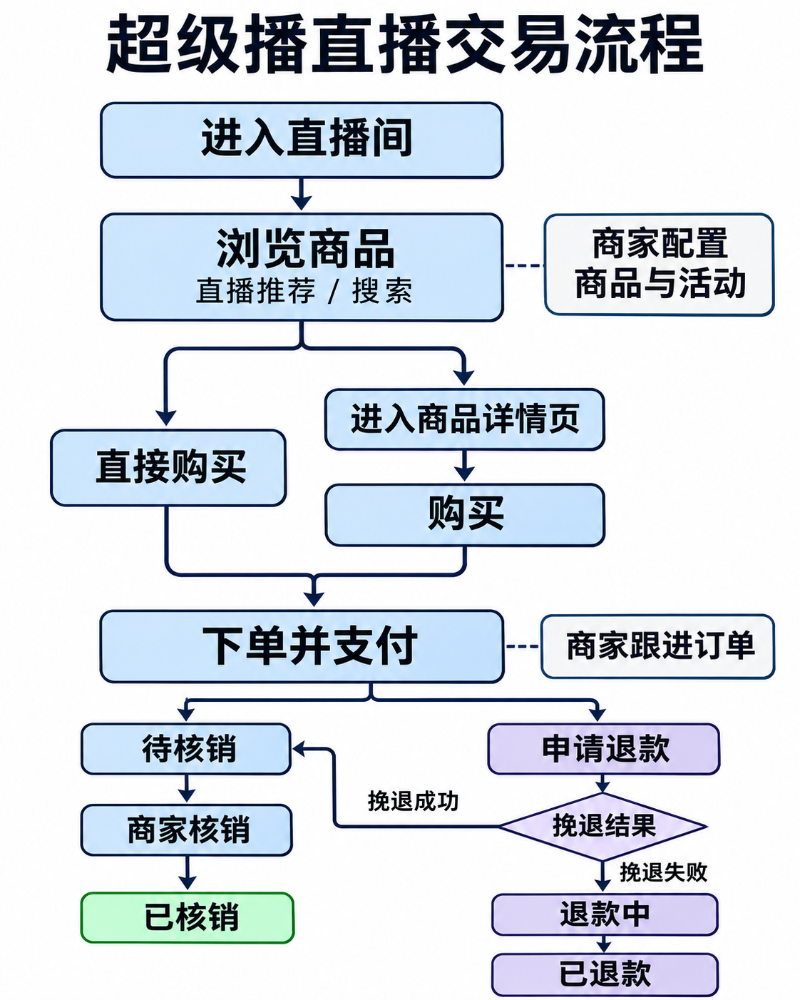

业务与产品
调研一线角色，梳理业务流程、需求与规则，输出产品方案与验证模型，推进学校灰度测试。
交付：业务流程 · PRD · MVP
从项目中的实际工作，说明能力与交付。
调研一线角色，梳理业务流程、需求与规则，输出产品方案与验证模型，推进学校灰度测试。
独立完成复杂 SQL 取数、指标口径和观远 BI 看板，分析招生、留存、师资及教室资源。
围绕资料整理与教务问答，设计 AI 任务边界、知识库和 RAG 链路，结合规则校验与人工兜底验证。
连接学校业务团队与集团产研，明确分工，组织方案验证，跟进灰度、推广及使用反馈。
SQL · 观远 BI · Excel · Codex · ChatGPT
PMP 项目管理认证 · 国家奖学金 · 大学生创新创业大赛校级优秀奖
4 个项目，涵盖业务系统、AI、交易与数据产品。
用运筹求解承接排课规则，用 AI 整理输入资料，保留业务确认。
效率数据来自学校反馈，观察范围为资源盘点至正式课表输出。
招生计划、教师、教室与时段依赖 Excel 人工匹配，各校规则分散。目标是把输入、约束和确认流程线上化，减少反复核对。
访谈教务、业务、校区和财务，按教师、学生、校区、时间及套班梳理约束，明确优化偏好与配置边界。AI 负责资料整理；运筹求解器生成方案，业务完成最终确认。
北京试点跑通资料整理至课表产出，按学校灰度。发现多预算文件错分后，调整为一个校区、一个预算对应一个任务包，支持并发处理。
正式方案采用本地部署的 Qwen3.8 27B。Codex 用于前期链路验证。AI 承接高频、重复、可校验、可回滚的资料整理，求解与课表确认保留原有职责。
按“读任务—拉模板—字段映射—缺省追问—规则校验—写系统—回读核对”执行。历史任务回放核对字段、文件归属、模板版本、规则冲突与写入结果。
课表采纳率纳入业务验收。求解器无解或输出失败仍需调参，求解过程的 AI 解读属于后续规划。
将分散的页面、流程与规则整理为可检索、可核对的答疑助手。
教务咨询重复，答案依赖页面、角色和规则上下文。以可信业务答疑为切口，低置信或越权问题保留澄清与人工兜底。
通过页面实采和前后端代码核对规则，按流程、功能、规则与异常分类。设计 FAQ 直答、RAG 生成、工具调用与人工兜底路由，按意图和置信度分流。
已支持基于知识库的业务答疑。用黄金集与 badcase 集回放，定位知识、切片、召回、生成及权限问题，修复后回归并灰度。
 查看完整流程图
查看完整流程图按标题和规则条目切片，保持条件与例外完整。多路召回后粗排、精排，再做相关性门槛和上下文压缩；高置信 FAQ 使用缓存，控制生成调用与上下文成本。
关注召回、引用、拒答、越权和人工兜底。按知识缺失、切片、Query 改写、召回、重排、生成幻觉、意图路由及权限流程归因，修复后加入回归集。
当前落地场景为业务答疑；自然语言规则配置、失败诊断及方案调整属于后续 Agent 能力规划。
连接前台直播交易与后台商家运营，贯通商品、活动、订单和用户经营。
加购率绝对提升 3.3 个百分点，为同一直播间 A/B 实验结果；商家与场次为项目规模。后台成果为管理、营销功能上线与指标口径落地。
消费医疗商家既需要提升直播成交，也需要统一管理商品、活动、订单与核销。围绕广告主侧 GMV，前台定位交易漏斗断点，后台承接交易与持续用户经营。
前台：结合行为路径与搜索词定位 SKU 过载、搜索路径过长的问题，优化推荐排序与长尾搜索。后台：明确用户、商品、促销、订单和库存边界，串联活动配置、订单核销、优惠券、消息触达与分层召回。
前台通过同一直播间单变量 A/B 验证加购率，护栏关注支付成功率和退款率。后台管理与营销功能已上线，支撑活动配置、订单跟进及核销，以券、订单核销和召回转化等口径验收运营。

查看完整流程图按缺口幅度和可控性优先修复加购。同一直播间约 1,000 人/组运行一周，检查样本均衡与埋点一致性；复盘中 p 值约为 0.012。
明确商品创建、活动配置、订单和核销的状态流转，以及优惠券领取、核销、过期等状态；配合权限审计、交易对账、消息触达和召回，支撑分层运营。
前台统一曝光、加购、下单、支付与退款口径，通过 SQL 和观远 BI 监控。后台按活动、商家、时间维度统计券领取、券核销、订单核销、召回及分层用户转化。
统一商品指标和分析视图，让选品能横向比较、定位短板。
三类视图：流量转化、价格与毛利、动销与库存。五项核心口径：点击率、支付转化率、毛利率、动销率、库存周转。
单看销量或成交额，难以区分流量、转化、利润与库存问题。目标是统一分析视图与指标口径，帮助运营比较商品并筛选候选品。
从曝光、点击、下单、支付、销售额、成本和库存等原子指标出发，定义衍生指标的分子分母、周期和商品维度，支持按类目、店铺、商品下钻。
已交付三类分析视图和五项核心口径。校验 UV 去重、非负性及库存快照一致性；选品采纳率和商品转化变化作为后续业务验收方向。
流量转化关注点击、下单与支付；价格与毛利关注毛利率和毛利额；动销与库存关注动销率及库存周转天数，形成统一商品分析视图。
固定数据源、更新频率和商品维度，校验 UV 去重、分子分母非负、库存快照一致，保证不同视图采用同一套统计口径。
以分析视图、口径文档和商品比较筛选流程为主要交付，支持运营选品；选品采纳率与商品转化提升属于后续效果验证。
我可以承担业务调研、问题定义、流程与规则设计，组织产品方案验证，并结合使用反馈推进迭代。涉及求解器、模型和系统研发的部分，我会与技术团队共同评审，明确职责边界。